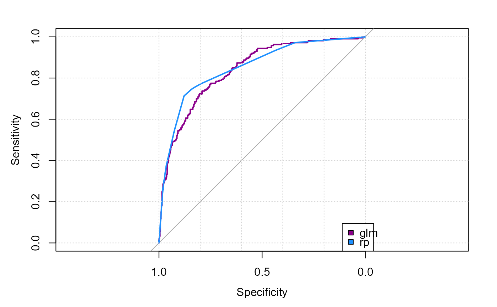

TModC.RdFor the comparison of several classification models, the AUC values and BrierScore values of the models are determined and tabulated. Both the absolute values and the relative values are reported, each related to the model with the highest corresponding value.
TModC(..., newdata = NULL, reference = NULL, ord = NULL)
# S3 method for TModC
plot(x, col = NULL, args.legend = NULL,...)the models to be compared
TModC object to plot
the data to use for predicting. If not provided, the model.frame will be used.
the reference values
character defining the order of the results table, can be any of "auc", "bs",
"auc_p", "bs_p", "bs_rnk", "auc_rnk", "ensemble" (using the mean of "auc_p" and "bs_p" for the ranking).
the color for the lines in the ROC plot
the legend to be placed in the ROC plot
a matrix with the columns
absolute value of area under the ROC curve (AUC)
percentage of the auc based on the best observerd AUC
the rank of the auc
absolute value of the Brier score
percentage of the Brier score based on the best observed BS
the rank of the BS
character representation of the AUC rank
character representation of the BS rank
TMod, BrierScore, AUC, ROC
d.pim <- SplitTrainTest(d.pima, p = 0.2)
mdiab <- formula(diabetes ~ pregnant + glucose + pressure + triceps +
insulin + mass + pedigree + age)
r.glm <- FitMod(mdiab, data=d.pim$train, fitfn="logit")
r.rp <- FitMod(mdiab, data=d.pim$train, fitfn="rpart")
mods <- list(glm=r.glm, rp=r.rp)
# the table with the measures
(tm <- TModC(mods, ord="auc"))
#> Setting levels: control = neg, case = pos
#> Setting direction: controls < cases
#> Setting levels: control = neg, case = pos
#> Setting direction: controls < cases
#> auc auc_p auc_rnk bs bs_p bs_rnk auc_grnk bs_grnk
#> rp 0.851 1.000 1 0.137 1.000 1 x. x.
#> glm 0.841 0.988 2 0.152 0.984 2 .x .x
# plotting the ROC curves
plot(tm, col=c("darkmagenta", "dodgerblue"))
